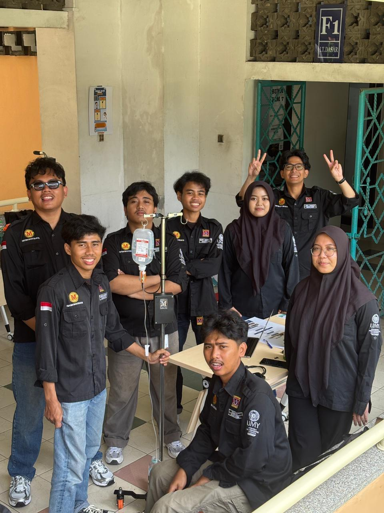
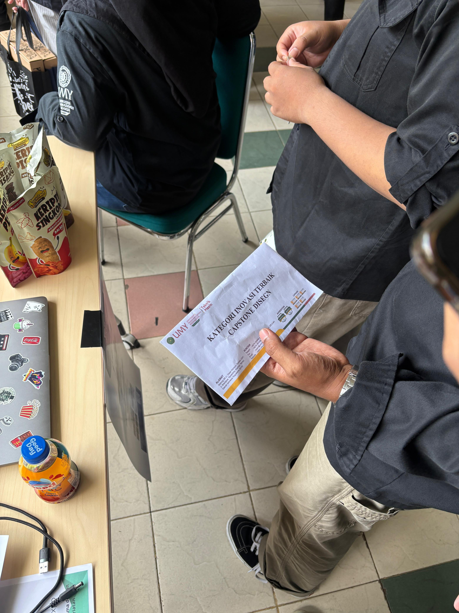

SMART IV STAND
A prototype for monitoring remaining IV-fluid weight using a load cell, HX711 amplifier, and ESP32 microcontroller. This project combines mechanical design, sensor integration, and embedded-system development.
🏆 1st Place — APSTM-PTMA Capstone Design Competition 2026
View technical details
System overview
A load cell measures the remaining fluid weight, the HX711 provides the measurement interface, and the ESP32 processes the sensor readings.
My contribution
Mechanical design, sensor integration, calibration, and prototype system development.
Project outcome
A functional capstone prototype recognized with first place at the APSTM-PTMA Capstone Design Competition.